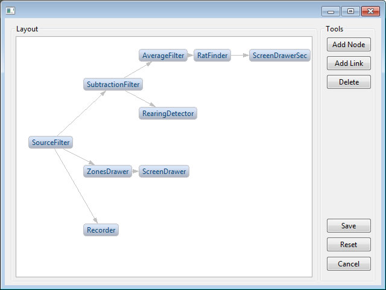
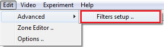
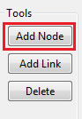
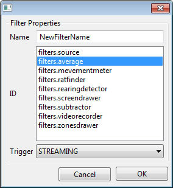
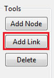
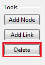
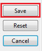
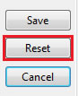
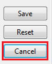

Filter Graph
Definition
Filter Graph can be used to:
- Add/Remove image filters
- Change filters' connections with each other
Example
The following snapshot is the default filters' layout for Open Field Test experiment:

Opening Filter Graph
Select menu item: Edit-> Advanced -> Filters setup ..

Adding filter
Filters can be added to the graph through the following steps:
- Click button: Add Node
- Enter a new unique filter name, select filter ID, and type of filter trigger, as shown in the following snapshot:
Notes:
- New filter name shall be unique
- List of filters displays all installed filters
- Trigger values: MANUAL (filter is activated manually), STREAMING (activated when video is streaming) and PROCESSING (filter is activated when track starts).
Connecting filters
To connect a source filter to a destination filter:
- Click button: Add Link
- Click on the source filter, then click on the destination filter
Result: A new arrow will be drawn to represent the new connection createNotes:
- Filters' connections are saved in the experiment's file automatically
- Each filter can only have one input port at maximum
- Each filter can only have one output port at maximum
- A source filter's output can be connected to multiple destination filters' input ports (i.e. single souce, multiple destinations)
- Some filters may not produce output data and will cause errors if their output port is connected (example: ScreenDrawer filter)
- Some filters may not accept input data and will cause errors if their input port is connected (example: SourceFilter filter)
- Filter Graph is till in the experimental phase, be careful with connecting incompatible filters (based on rules stated in the point above)
Deleting filter/connection
Filters and connections can be deleted by:
- Select the filter/connection to be deleted
- Click button: Delete

Saving filter graph
Filters' connections are saved to the experiment file.
To save Filter's connections:
- Click button: Save, as shown in the following snapshot:

Resetting filter graph
Filter graph can be reset to the state when it was opened.
To Reset filter graph:
- Click button: Reset, as shown in the following snapshot:

Cancelling filter graph
Filter graph can be cancelled, and in this case the window is closed and no modifications are saved.
To cancel Filter graph:
- Click button: Cancel, as shown in the following snapshot:
